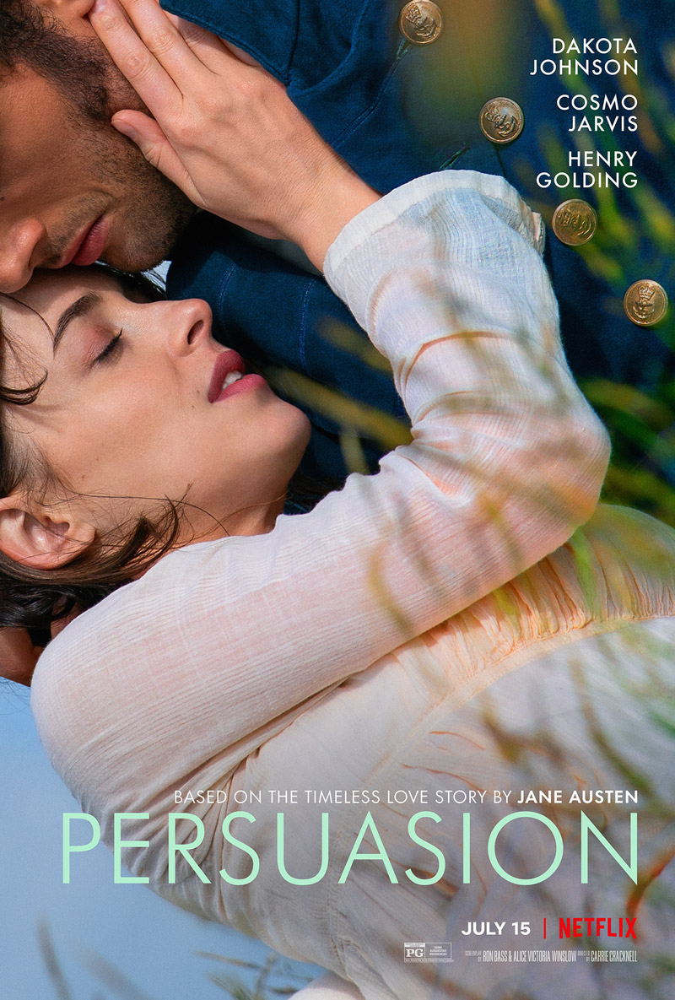

Persuasion
- Lançamento: 15 de julho de 2022
- Direção: Carrie Cracknell
- Elenco: Dakota Johnson, Cosmo Jarvis, Henry Golding
- Adaptação de: Persuasão
SIPNOSE
Persuasão é um filme de drama americano de 2022 dirigido por Carrie Cracknell a partir de um roteiro de Ron Bass e Alice Victoria Winslow, baseado no romance de mesmo nome de Jane Austen. É estrelado por Dakota Johnson, Cosmo Jarvis, Nikki Amuka-Bird, Mia McKenna-Bruce, Richard E. Grant e Henry Golding.